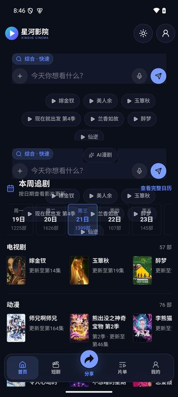
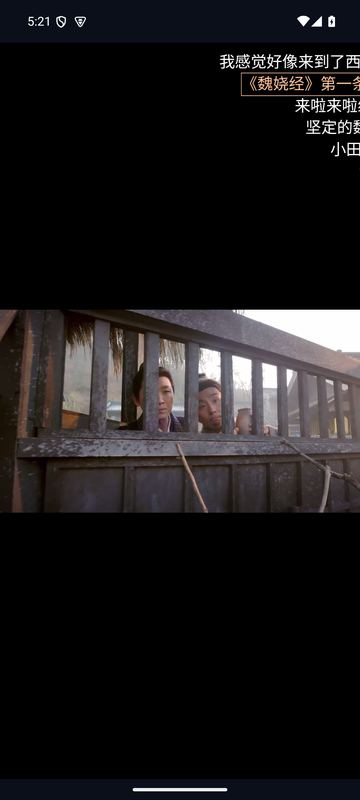
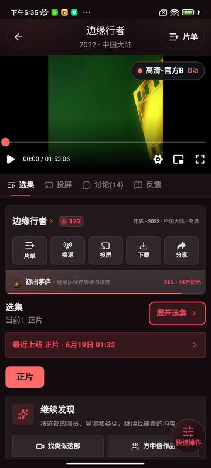
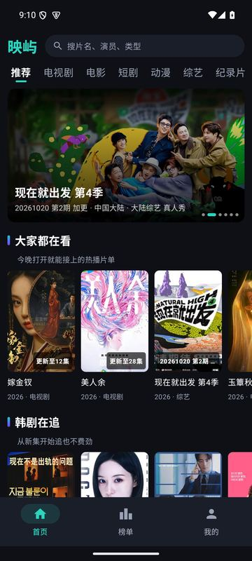
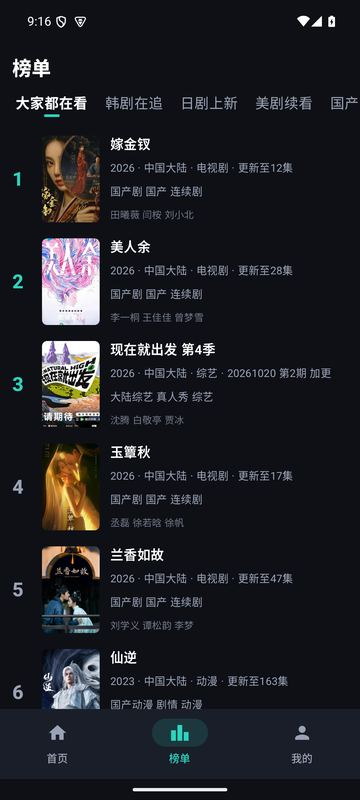
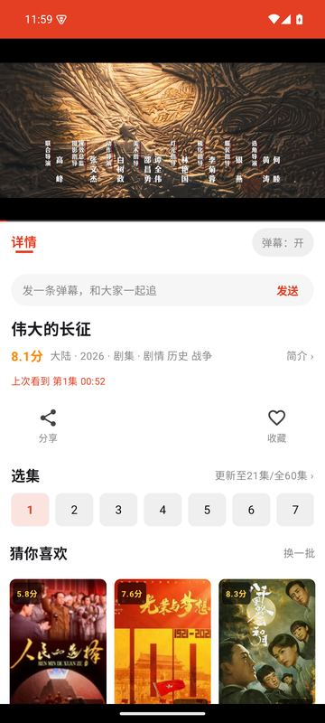

影视客户端下载中心
4 款 Android 影视客户端，支持检索、选集、换线路、弹幕和续播。点下载后会自动选一条可用的下载线路；都连不上时可手动选择。
星河影院
深色界面 · 本周追剧日历
影视检索与播放：首页直接搜索，按日期看本周更新，换线路、弹幕、续播。
手动选择线路（三条直链）


赤焰影院
深色赤红界面
赤红配色的影视播放客户端：检索、选集、换源、弹幕、续播。
手动选择线路（三条直链）

映屿
榜单 · 分类 · 多线路 · 弹幕
原生影视客户端：榜单、分类筛选、多线路、弹幕与续播。
手动选择线路（三条直链）


追光
追剧向 · 弹幕 · 多线路
追剧，有弹幕才热闹：多源播放、弹幕、续播。
手动选择线路（三条直链）

安装指南（4 步）
- 点上方产品的下载按钮，浏览器会下载
.apk文件。 - 下载完成后点开文件（通知栏或「文件管理 / 下载」里）。
- 首次安装时系统会提示「禁止安装未知来源应用」：点设置，给当前使用的浏览器（或文件管理器）打开允许安装未知应用，然后返回继续。
- 点安装，装好后打开。装好后直接打开即可。
通用路径（原生 Android）
- Android 8.0 及以上：设置 → 应用 → 特殊应用权限 → 安装未知应用 → 选浏览器 → 允许来自此来源。（不同品牌菜单名略有差异）
- Android 7.x：设置 → 安全 → 未知来源，打开开关。
- 装完后可以把浏览器的该权限再关掉。
小米 / Redmi（MIUI、HyperOS）
- 安装时提示「禁止安装」或「安装来源不明」：点设置→ 允许此来源安装。
- 可能出现「安全检测 / 风险提示」页面：选继续安装（不同系统版本文案不同）。
- 若仍被拦截，在 设置 → 隐私保护 → 特殊权限设置 里查看「安装未知应用」，给浏览器放行。
华为 / 荣耀（HarmonyOS、EMUI、MagicOS）
- 弹出「纯净模式 / 应用安全检测」提示时，选继续安装；部分机型需要到 设置 → 安全 里按提示关闭纯净模式。
- 「安装未知应用」在 设置 → 应用 → 应用管理（或特殊访问权限）里给浏览器打开。
OPPO / 一加（ColorOS）
- 提示「安装风险」时，点设置→ 打开「允许此来源」，返回后点继续安装。
- 部分版本会要求验证 OPPO 账号密码才能安装，这是系统的安全验证。
vivo / iQOO（OriginOS、Funtouch OS）
- 安装时若提示未知来源，点设置，在「安装未知应用」里给浏览器打开允许。
- 部分版本会弹出风险提示或要求验证 vivo 账号密码；确认来源后选继续安装。
Google Play 保护（Play Protect）提示
- 出现「Play 保护机制已阻止 / 此应用未经扫描」：点更多详情→仍然安装。
- 不建议为了装应用永久关闭 Play 保护；确需关闭可在 Play 商店 → 头像 → Play 保护 → 设置 里临时调整，装完再打开。
怎么核对安装包没被改过（SHA-256）
- 每个产品页都列出了安装包的 SHA-256。电脑上：macOS
shasum -a 256 文件名.apk，Windowscertutil -hashfile 文件名.apk SHA256，结果应与页面一致。
已安装？更新说明
- 星河影院、赤焰影院：应用内置「检查更新」，有新版本会提示；也可以回本页下载新版直接覆盖安装。
- 映屿、追光：目前没有应用内检查更新，请回本页（或收藏对应产品页）下载新版，直接覆盖安装。
- 覆盖安装时无需先卸载，应用保存在本机的数据（观看进度、收藏）会保留。前提是新旧包签名一致；如果系统提示「签名冲突 / 与已安装应用冲突」，需要先卸载旧版，本机数据会丢失。
常见问题
为什么要「允许未知来源」？这个包安全吗？
这些应用没有上架应用商店，需要从网站直接安装，系统因此要求你手动允许。我们只在本站和 GitHub 仓库发布安装包，并公布每个包的 SHA-256 供核对；请不要从其他来源下载。应用请求的权限与第三方 SDK 都列在隐私政策里。
需要注册或登录吗？
不需要。应用没有账号体系，观看进度、收藏、搜索历史只保存在你的设备上。
有广告吗？可以拒绝吗？
星河影院 1.3.2、赤焰影院 1.3.2、映屿 1.4.0、追光 1.7.1 集成了第三方广告 SDK。应用启动后会加载广告 SDK，处理哪些信息见隐私政策。具体处理哪些信息见隐私政策。
影视内容从哪里来？
来自第三方公开站点或采集站的公开接口，应用本身不存储、不上传任何视频。第三方内容可能随时变更、失效或下线。
提示无法播放 / 一直转圈怎么办？
先在播放页切换线路；仍不行可能是该片源暂时失效，稍后再试或换一部。确认网络正常后仍有问题，请发邮件或在 GitHub Issues 反馈，注明产品、版本、片名和手机型号。
系统版本要求？
星河影院、赤焰影院、追光需要 Android 7.0 及以上；映屿需要 Android 8.0 及以上。
安装失败 / 解析包出错？
先确认文件完整：对比产品页的 SHA-256 与大小；重新下载（可换一条线路）。再确认已给浏览器或文件管理器打开「安装未知应用」。仍失败请反馈系统版本与提示原文。
发现版权问题怎么处理？
权利人请把权属证明、侵权内容位置（片名/页面/线路）和联系方式发到页脚邮箱，我们核实后会屏蔽相关条目。
关于与联系
运营者：剑透人生工作室。反馈或权利人通知请邮件 hedd8681@gmail.com，或到 GitHub Issues。隐私与协议：隐私政策 · 用户协议。